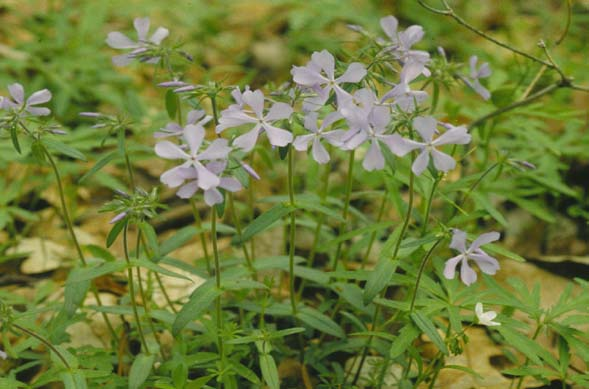
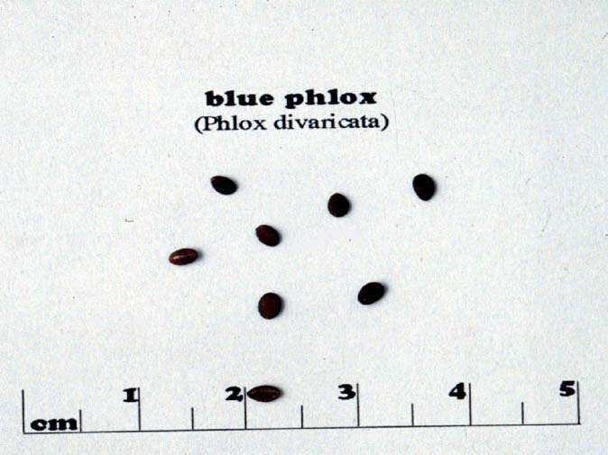
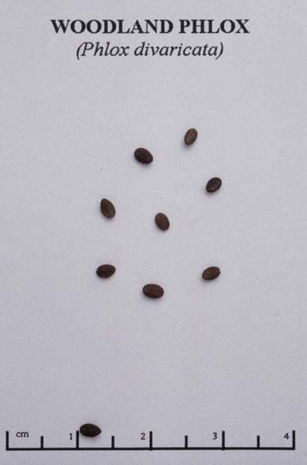

Phlox Divaricata
Family: Polemoniaceae
Woodland Phlox
Swink/Wilhelm #5


Click to view larger photo
FLOWERING: Mid-April to mid-June
SEED TIMING: June
HABITAT: Woodland
DIAGNOSTIC FEATURES: 10 to 20 inches high. Leaves opposite, ovate to lanceolate, unstalked, sticky stem. Fragrant, bright blue, 5 petaled, trumpet shaped flowers in clusters.
TO PICK: Seeds form in small green pods. Pick when pods turn tan and sepals open in a star-like formation. Put pods in deep, open brown bag where they will "explode" to release seed.